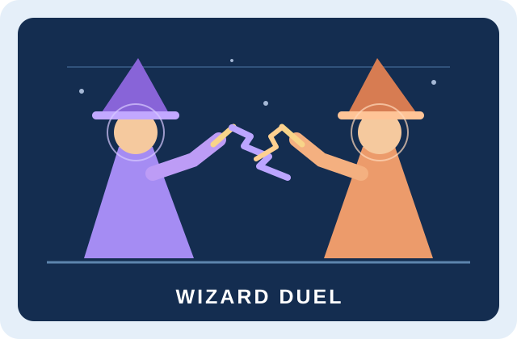

How the Game Works
Two players face off as Violet and Ember. Aim a virtual wand, cast a spell, and duck incoming bolts. The first player to score five head hits wins.
Play with the keyboard, use the on-screen touch controls, or choose webcam mode to control both wizards with arm movements. Watch a demo shows a computer-controlled duel.
Features of the Game
- Two virtual wands per player, with aiming, casting, and ducking.
- Keyboard, touch, and two-player webcam controls.
- A live mirrored camera view with an optional tracking overlay.
- Pause, restart, and fullscreen controls.
- Head-hit scoring, brief protection after a hit, and a first-to-five victory.
How to Play
Try the demo or keyboard controls
Launch Wizard Duel and click Watch a demo, or choose keyboard mode and click Start the duel to play with a friend.
| Action | Violet · left | Ember · right |
|---|---|---|
| Cast left wand | A | J |
| Cast right wand | D | L |
| Duck · hold | S | K |
| Aim up · hold | W | I |
| Aim down · hold | X | M |
Release a cast key to reload that wand. Press Escape to pause. The space bar pauses or resumes when focus is outside a button.
Play with the webcam
- Select Webcam, click Open camera, and allow access. Internet is needed to load the tracking model.
- Stand side by side facing the camera, with Violet on the left of the mirrored preview and Ember on the right.
- Keep your face, shoulders, hips, elbows, and wrists visible. Stand upright with bent elbows for two seconds to calibrate.
- Click Start the duel. Extend either arm sideways until nearly straight to cast, then bend that elbow to reload.
- Raise or lower your hand to aim. Bend your knees comfortably to lower your head and duck.
- If tracking is lost, return to your own side and resume once tracking is ready. Recalibrate after moving the camera.
Only head hits score. Each successful hit awards one point and gives the defender a short period of protection. Play in a clear space with comfortable movements.
What You Will Learn
A pretrained MediaPipe pose model estimates body landmarks for both players. The game uses elbow angles and wrist positions to recognize arm extensions, aiming, and ducking.
The game checks spell paths against each wizard’s head position to award points. Changing your posture moves the target, which shows how visual tracking and game rules work together.
Camera video is processed in the browser. Webcam mode loads its model online, while the keyboard game uses the project’s local assets.